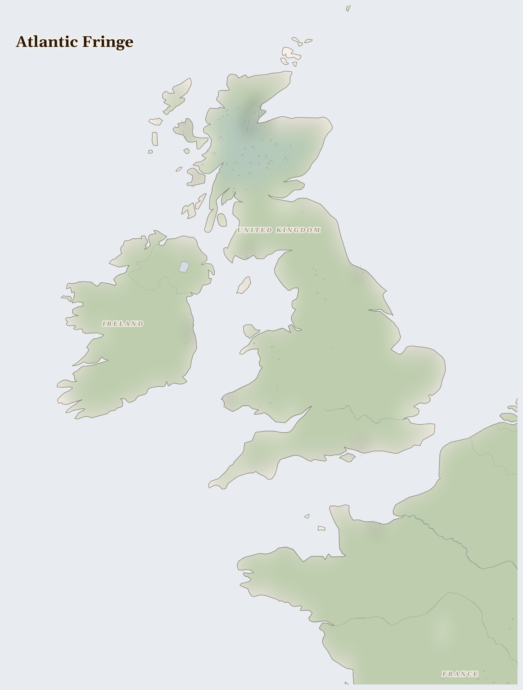

Atlantic Fringe
United Kingdom, Ireland, France
Palearctic
The green, wet, windy edge of Europe where the land meets the wild Atlantic — Ireland, Britain, and the coast of France. Rain sweeps in off the ocean, so the fields glow emerald, sheep dot the hills, and seabirds wheel over cliffs above a cold grey sea.
How Life Works Here
Rain makes grass, and grass makes milk — this is a land of dairy farms, of butter and cheese. Fishing boats work the rough seas, and out in the North Sea, platforms have pumped up oil and gas for many years, though those old wells are now being switched off.
Family dairy and sheep farmers, Migrant agricultural workers (seasonal).
Small-scale inshore fishing fleets, Industrial trawler operators.
Energy companies (Orsted, SSE, Equinor), Coastal communities (construction jobs, visual impact, fishing displacement).
What Is Happening
This is a settled, comfortable place, and much is good. The gentle care question is about keeping the land and water clean: so many cows can let too much muck into the rivers, and the old oil platforms must be taken apart carefully so they don't harm the sea. People here are switching to wind off the coast — those same wild winds now turning giant turbines to make clean electricity.
Something Wonderful
This coast should be freezing — it's as far north as icy Canada — but a great warm river flowing inside the ocean, the Gulf Stream, carries heat all the way from the Caribbean and keeps it mild and green. And on the cliffs nest puffins: small black-and-white birds with bright orange beaks, who carry a dozen little fish crosswise in their mouths at once.
Let's Do Something Together
Clean Water, Dirty Water
Put some soil in a cup of water and stir it up. Look how dirty it is! Now pour it through a cloth into another cup. The cloth catches the dirt. Many families do not have a way to clean their water. Think about how lucky we are to turn on a tap.
- two cups
- soil
- cloth or coffee filter
For grown-ups
Lack of water treatment infrastructure means waterborne disease remains a leading cause of child mortality in crisis zones. Filtration and purification require materials that are often unavailable.
Let Us Pray Together
Thank you for clean water, God. Please help children who drink dirty water.
Leader: We pray for those living under violence. For communities enduring fighting in this region.
All: Lord, hear our prayer.
Leader: We pray for France. For France, where multiple pressures are interacting and the situation is escalating.
All: Lord, hear our prayer.
Leader: We pray for the helpers. For humanitarian workers and missionaries in Atlantic Fringe.
All: Lord, hear our prayer.
Leader: We pray for seeds of hope. For every act of resistance and care in Atlantic Fringe.
All: Lord, hear our prayer.
The Lord is my light and my salvation; whom then shall I fear? The Lord is the strength of my life; of whom then shall I be afraid?
Collect
Almighty God, who called your Church to bear witness that you were in Christ reconciling the world to yourself: help us to proclaim the good news of your love, that all who hear it may be drawn to you; through him who was lifted up on the cross, and reigns with you in the unity of the Holy Spirit, one God, now and for ever.
Amen.
Talk About It
The wild wind here used to just blow — now it turns turbines to make electricity. Can you think of something that seems like a nuisance but could actually be turned into a help?
One Thing We Can Do
If there's butter or cheese in your kitchen, it may have come from rain on a green Atlantic hill. Thank God for the rain and the farmers — and for winds that now light homes.